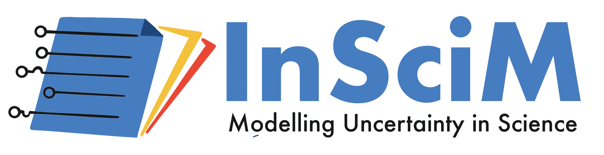
Modelling Uncertainty in Science
ANR InSciM Project Official Home Page
ANR InSciM Project is funded by French ANR JCJC 2021 - 2025, ANR-21-CE38-0003-01 (2021-2024).
About InSciM Project
As the world undergoes profound transformations, science is highly solicited, such as in the context of health crises (Covid-19), the reflection and dialogue on climate change, ecological and energy transformations, monetary transformation, humanitarian issues, or geopolitical crises. The perception of uncertainty in scientific discourse is therefore an important issue for all scientific activities. In science, the production of new knowledge uses rigorous methodological approaches based on the object of study and its disciplinary field. However, the use of tools or observations that produce a margin of error, as well as the use of abductive and inductive reasoning imply the presence of uncertainty, which can be specific to each discipline, linked to the object of the study and the methodologies that are used. Uncertainty in science is an integral part of the research process.
The ANR InSciM project aims to study uncertainty in science through ontological and linguistic modelling of this notion from datasets of articles in different disciplines. The objectives are to propose a linguistic model of the expression of uncertainty in scientific articles, in order to propose a tool to identify and classify these phenomena present in papers in different disciplines in Social Sciences and Humanities (SSH) and in Science, Technology, and Medicine (STM).
Funding
French ANR JCJC 2021 - 2025, ANR-21-CE38-0003-01
Partners
Université de Franche-Comté, France
Centre de Recherches Interdisciplinaires et Transculturelles (CRIT)
Institut Universitaire de France (IUF)
Latest News & Progress
Welcome to Our Team, Marine and Maya!
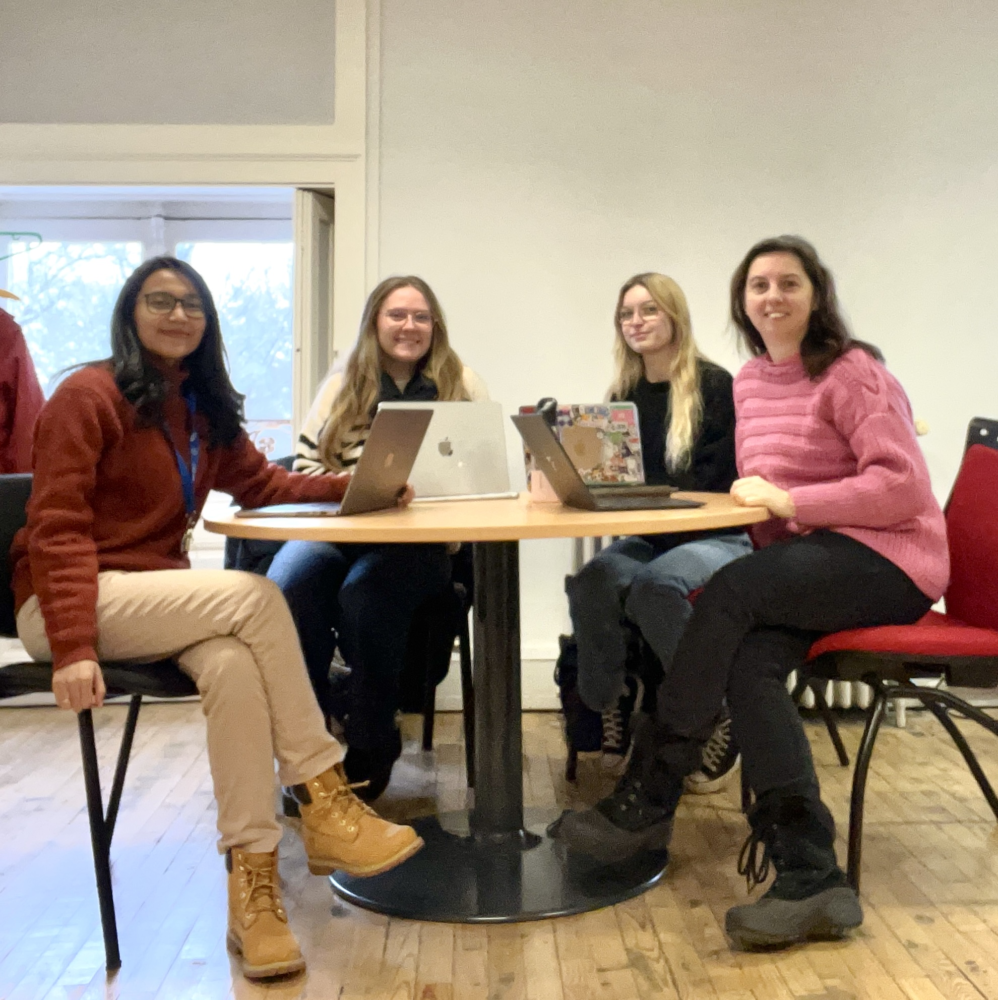As we continue to expand and embark on more ambitious project, our team is thrilled to welcome two new faces who will be joining us as interns. Please give a warm welcome to Marine Potier and Maya Mathie, two incredibly talented and enthusiastic individuals who are set to make significant contributions to our endeavors.
Together, Marine and Maya will be working on various aspects of the project, offering fresh insights and helping us achieve new milestones. Their roles as interns are crucial, providing them with hands-on experience while significantly contributing to our project's success.
We believe that the fresh perspectives and innovative ideas that Marine and Maya bring will be a huge asset to our team. We're excited to see how their contributions will shape our projects and help us achieve our goals.
Join us in warmly welcoming Marine POTIER and Maya MATHIE to our project team. We look forward to a fruitful collaboration and the remarkable achievements we will accomplish together.
Welcome aboard, Marine and Maya!
Unleashing the Power of UnScientify: Detecting Uncertainty in Scientific Text - Join Us at EEKE-AII 2023 Workshop!
We are delighted to announce our team's participation in the esteemed EEKE-AII 2023 Workshop, where we will present our groundbreaking demo app called UnScientify. This interactive system revolutionizes scientific text analysis by detecting uncertainty at the sentence level. With a fine-grained annotation scheme and an automated pipeline combining pattern matching and authorial reference checking, UnScientify offers interpretability and facilitates information retrieval, text mining, and scholarly document processing. Join us at the workshop on June 26–27, 2023, as we unveil UnScientify's potential to advance scientific comprehension.
Together, Marine and Maya will be working on various aspects of the project, offering fresh insights and helping us achieve new milestones. Their roles as interns are crucial, providing them with hands-on experience while significantly contributing to our project's success.
We warmly welcome Marine and Maya to our team and look forward to a journey filled with learning, growth, and remarkable achievements. Let's make great things happen together!
InSciM Progress Report Meeting 2023
We are pleased to announce the upcoming online progress report meeting with our esteemed Project Advisory Board. The meeting, scheduled for 19th June 2023, marks our second gathering to present the latest developments and milestones achieved in our research project.
To facilitate effective discussions, we encourage all board members to download the presentation slides from the provided link: Presentation 1, Presentation 2. These slides offer a comprehensive overview of our progress, key findings, and future directions. We value the expertise and guidance our board members bring to the table, and their input is crucial in shaping the trajectory of our research. We sincerely appreciate their continued support and look forward to a productive and insightful session.
For any inquiries or assistance regarding the progress report meeting, please contact our project team. Thank you for your ongoing commitment, and we eagerly anticipate this valuable opportunity to engage with our distinguished Project Advisory Board members.
Research Visit & Collaboration with GESIS
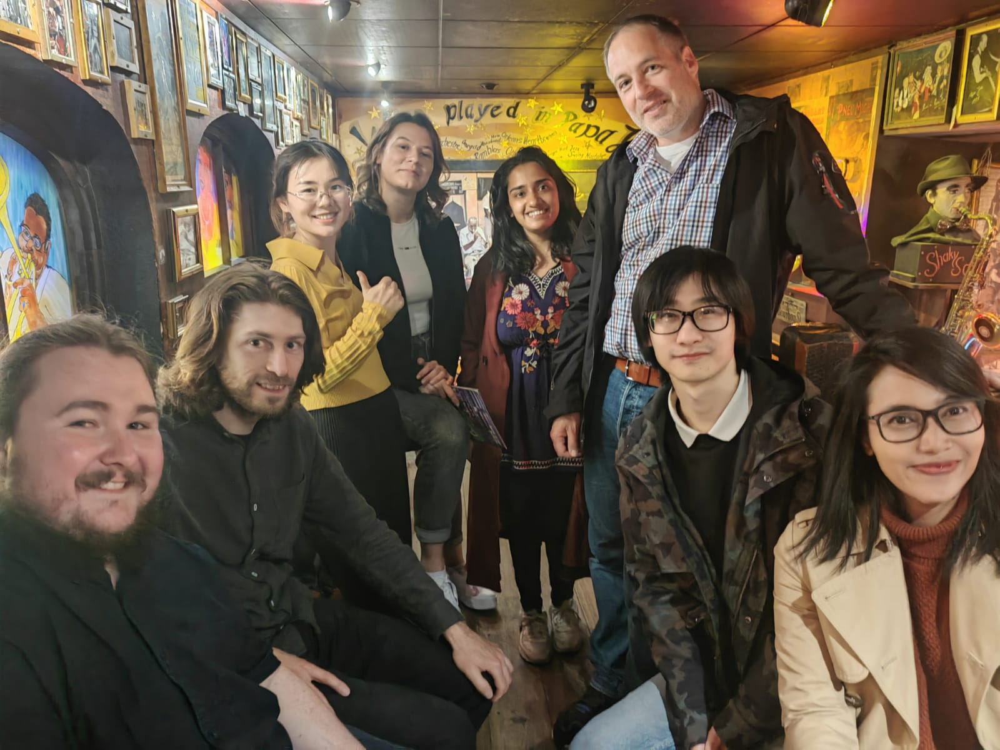We are excited to provide an update on the progress of InSciM project. Over the past three months, our PhD student, Panggih Kusuma Ningrum, had the invaluable opportunity to participate in a research visit program at GESIS – Leibniz-Institute for the Social Sciences in Germany. Under the guidance of Dr. Philipp Mayer, the esteemed team leader of the Information & Data Retrieval division at the GESIS department Knowledge Technologies for the Social Sciences (WTS), our collaboration focused on employing natural language processing (NLP), text mining, and analysis techniques to examine scientific uncertainty in the empirical social science domain.
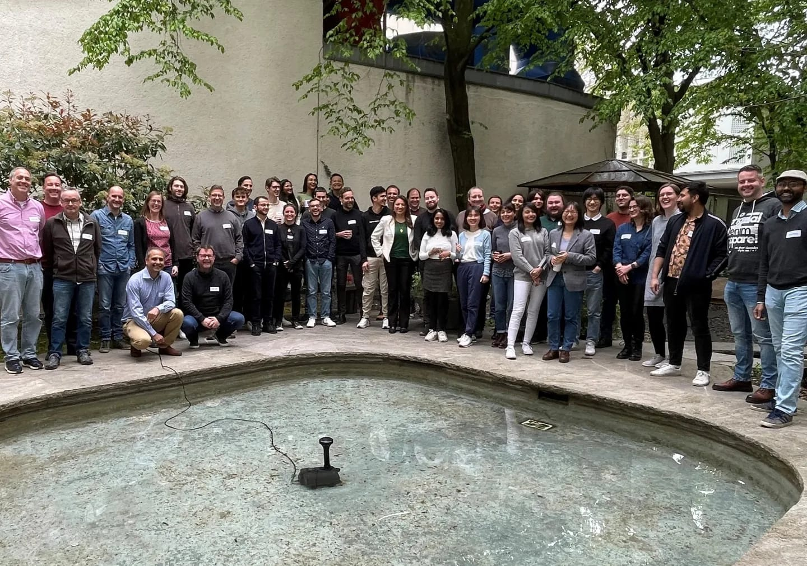During the program, we achieved significant milestones. Firstly, we successfully curated and annotated a comprehensive dataset in the field of empirical social science, providing a valuable resource for future studies in this area. Additionally, we developed the UnScientify app, a demonstrative interactive system designed to detect and analyze scientific uncertainty in scholarly full-text articles. This tool not only showcases our progress but also has the potential to aid researchers in understanding and addressing uncertainty in scientific literature.
Furthermore, we are delighted to announce that the research paper from this collaboration has been accepted for presentation at the Joint Workshop of the 4th Extraction and Evaluation of Knowledge Entities from Scientific Documents (EEKE2023) and the 3rd AI + Informetrics (AII2023), which will be held as part of the ACM/IEEE Joint Conference on Digital Libraries 2023 in Santa Fe, New Mexico, USA, from June 26 to 30, 2023. This recognition not only validates the significance of our work but also provides an excellent platform to share our findings with the broader scientific community.
We extend our gratitude to Dr. Philipp Mayer and the team at GESIS for their invaluable support and collaboration. We are confident that our research project will contribute to advancing the understanding of scientific uncertainty and its implications in the empirical social science field.
Breaking News: Join Us at ISSI 2023 to Explore our Latest Research Findings!
We are thrilled to announce that our research paper entitled "Investigating Uncertainty in Scholarly Articles: An Interdisciplinary Annotation Framework" has been accepted for presentation at the esteemed 19th International Conference of the International Society for Scientometrics and Informetrics (ISSI 2023) in Bloomington, Indiana, US. In this paper, we delve into the expression of uncertainty in academic articles and propose a novel interdisciplinary annotation framework that encompasses five dimensions for categorizing uncertain sentences. Through the analysis of a diverse corpus from various disciplines, we conduct experiments on two distinct sets of sentences: one obtained via uncertainty cue mapping and another through manual annotation of randomly selected articles. Our findings unveil the distribution of uncertainty types across journals and categories, while also highlighting the potential for automation in certain aspects of the annotation process. We are honored to share our research with the scholarly community at ISSI 2023 and look forward to engaging in insightful discussions on this crucial topic.
Team
Principal Investigator
| 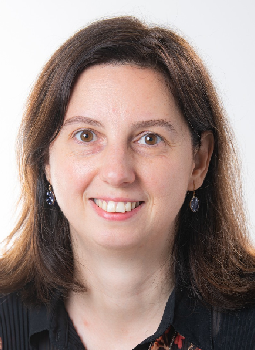 |
|---|
| Iana ATANASSOVA, Ph.D. |
| CRIT, University of Franche-Comté, IUF, France |
Ph.D. Fellow
| Panggih Kusuma NINGRUM |
| CRIT, University of Franche-Comté, France |
Intern
| 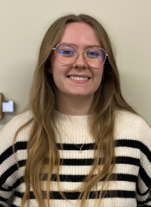 |
|---|
| Marine POTIER |
| CRIT, University of Franche-Comté, IUF, France |
Intern
 |
|---|
| Maya MATHIE |
| CRIT, University of Franche-Comté, France |
Project Advisory Board
| 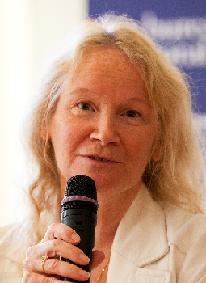 | 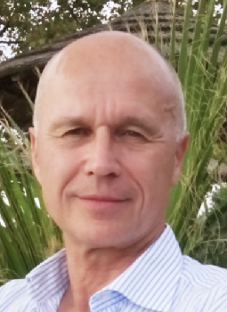 | 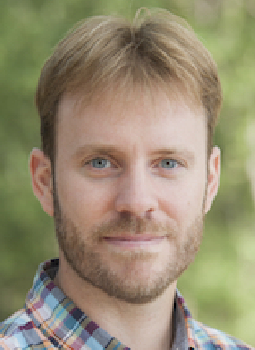 | |
|---|---|---|---|
| Pr. Sylviane CARDEY | Pr. Laurence GAIDA | Pr. Christophe ROCHE | Dr. Guillaume CABANAC |
| CRIT, University of Franche-Comté, France | CRIT, University of Franche-Comté, France | LISTIC, University Savoie Mont Blanc, France | IRIT, University of Toulouse, France |
| 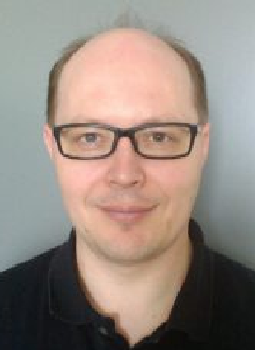 | 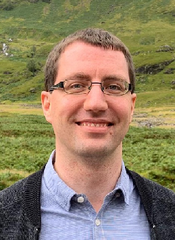 | 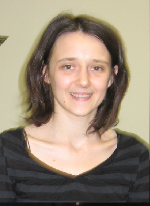 |
|---|---|---|
| Dr. Marc BERTIN | Dr. Michael FARBER | Dr. Isabelle DROUET |
| ELICO, University Claude Bernard Lyon 1, France | Karlsruhe Institute of Technology, Germany | SND, Sorbonne University, France |
Publications
- Panggih Kusuma Ningrum, Iana Atanassova (2023). Scientific Uncertainty: an Annotation Framework and Corpus Study in Different Disciplines. In: 19th International Conference of the International Society for Scientometrics and Informetrics (ISSI 2023), Bloomington, Indiana, US.
- Panggih Kusuma Ningrum, Philipp Mayr, Iana Atanassova (2023). UnScientify: Detecting Scientific Uncertainty in Scholarly Full Text. In: Joint Workshop of the 4th Extraction and Evaluation of Knowledge Entities from Scientific Documents (EEKE2023) and the 3rd AI + Informetrics (AII2023), part of the ACM/IEEE Joint Conference on Digital Libraries 2023, Santa Fe, New Mexico, USA, June 26 - 30, 2023.
- Panggih Kusuma Ningrum, Iana Atanassova (2023). Dataset for Multidisciplinary Uncertainty Mining - ver1 (Version 1) [Data set]. Zenodo. https://doi.org/10.5281/zenodo.8024787.
Preliminary Results
- Iana Atanassova, François-C. Rey and Marc Bertin (2018). Studying Uncertainty in Science: a distributional analysis through the IMRaD structure. In: 7th International Workshop on Mining Scientific Publications (WOSP) at LREC 2018. Miyazaki, Japan, May 2018.
- Rey, F. C., Bertin, M., & Atanassova, I. (2018). Une étude de l’incertitude dans les textes scientifiques: vers la construction d’une ontologie. In: Terminologie & Ontologie: Théories et Applications - Actes de la conférence (TOTh 2018), pp. 229 242. Chambéry, France.
- Iana Atanassova, François-C. Rey (2018). Categorising Scientific Uncertainty in Papers. In: SciNLP 2021 - 2nd Workshop on Natural Language Processing for Scientific Text, 8 October 2021.
Contact
- E-mail: project.inscim@gmail.com, iana.atanassova@univ-fcomte.fr
- Twitter: @project_InSciM
- Address: Iana Atanassova - CRIT, 30 rue Megevand, 25000 Besançon, France